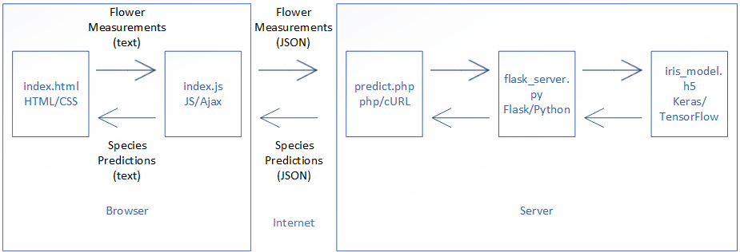

| Demonstration Of Deployed Keras Machine Learning Model Using Iris Dataset | |||||||||||||
| Enter flower measurements then click the "Predict" button | |||||||||||||
|
|||||||||||||
| References: | |||||||||||||
| Source code: https://github.com/mtm12/KerasIris | |||||||||||||
| Model development video: https://www.youtube.com/watch?v=LLQYfUo5fs0 | |||||||||||||
| Model deployment video: | |||||||||||||
| How it works | |||||||||||||
|  | |||||||||||||
| ©2018 Marc McLean |